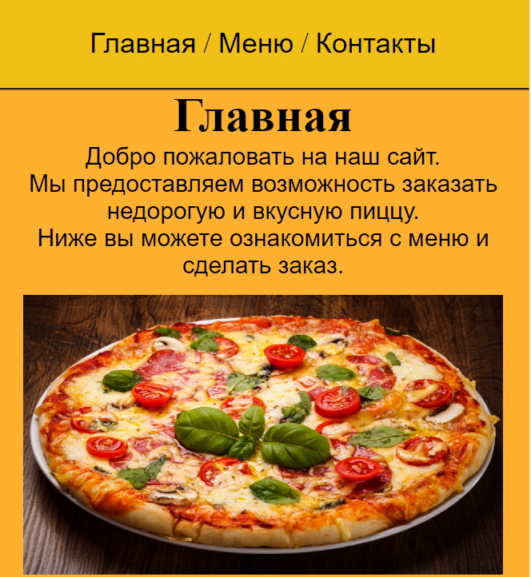
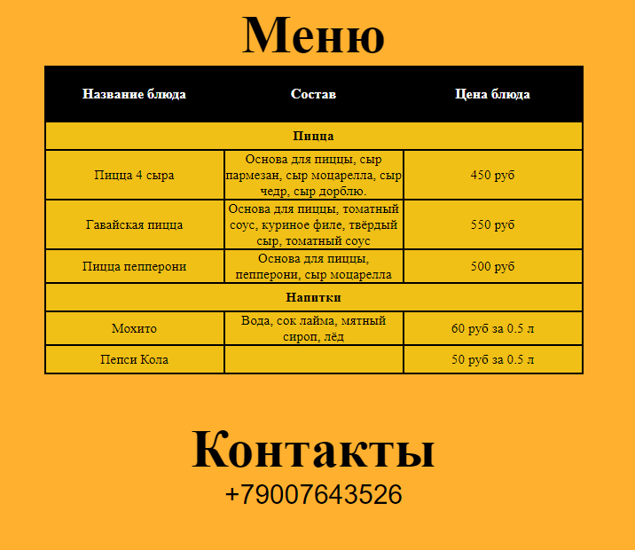
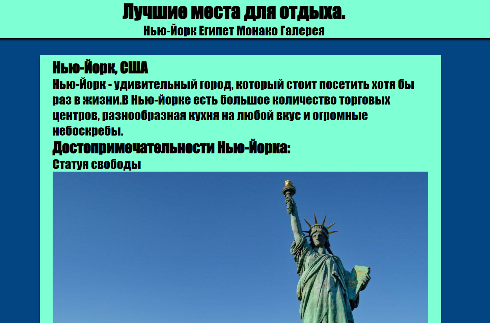
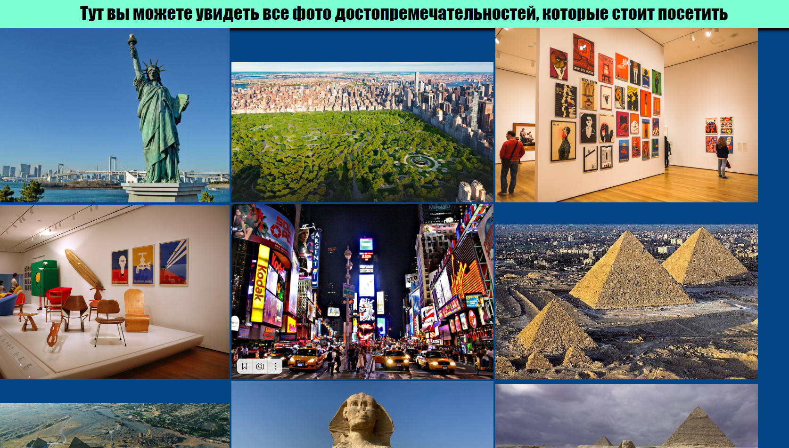
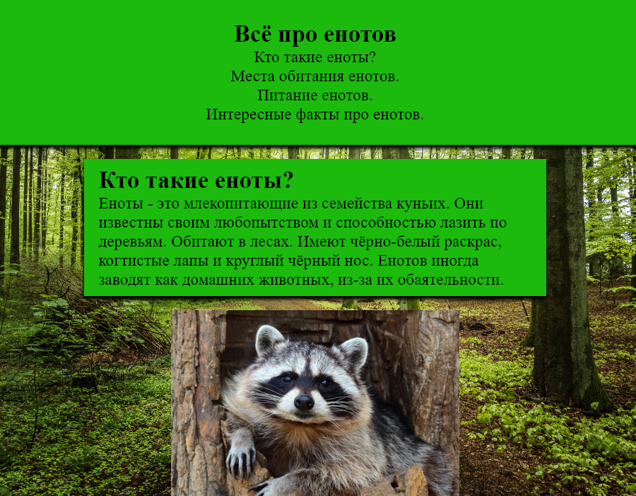
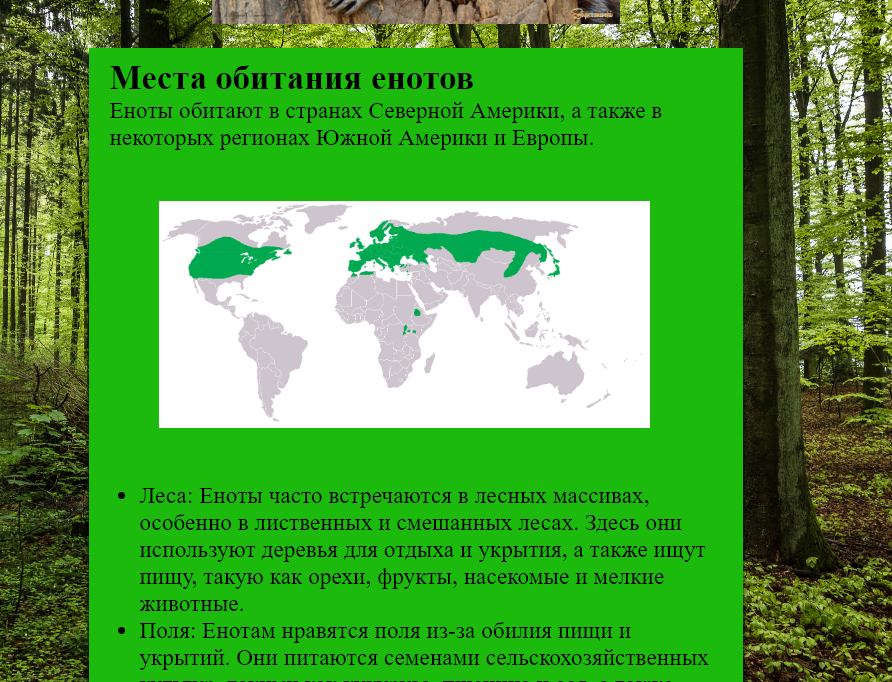

Добро пожаловать на мой сайт.
Меня зовут Саша, мне 17 лет и я учусь создавать веб-страницы.
Обо мне
Имя: Глыбин Александр.
Возраст: 17 лет.
Место учёбы: Школа №9 им. Гагарина.
Город: Мелитополь.
Мои качества
Знаю английский на уровне b1-b2.
Стрессоустойчивый.
Отзывчивый.
Считаю что ключ к решению любой проблемы - знания.
Мои проекты
В данный момент я прохожу курс по программированию
"Код будущего", вот несколько из моих готовых проектов.
Сайт для заказа пиццы.
Этот проект представляет собой сайт-визитку начинающей пиццерии. На сайте есть заголовок с разделами: "Главная","Меню" и "Контакты". Присутствует также подвал с указанием автора этой страницы (меня). Цвета сайта подобраны не случайно, оранжевый цвет в шапке означает актуальность, удовольствие, единение и дешевость, что идеально подходит для сайта про пиццу. Ниже представлены фото проекта, вы также можете оценить его в оригинале нажав на эту ссылку
Места, которые стоит посетить
На этом сайте вы можете наблюдать информацию о самых популярный туристических местах вместе с их фото. Большая часть этого сайта сделана с помощью списков. Вы можете оценить этот сайт, нажав на эту ссылку
Сайт на тему "Любимое житовное"(Енот)
На этом сайте размещенна полная иформация о таких животных, как енот. Сдесь есть всё, от места обитания до особенностей питания. Сайт, как и все предыдущие, сделан по всем стандартам и не имеет ошибок в коде. Оценить сайт вы можете нажав на эту ссылку
